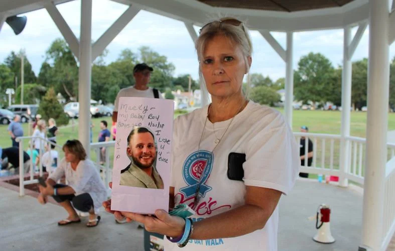

In 2019, The Washington Post obtained records from a Drug Enforcement Administration database tracking all opioid painkillers dispensed between 2006 and 2012 —including the names of the manufacturers, distributors, and pharmacies that received the pills. In 2020, the database was updated to add data for 2013 and 2014. This project uses information from the Post’s database, data from the National Center for Health Statistics and a report from The Cecil Times to tell the story of the opioid epidemic in Cecil County and beyond.
It almost seems like ancient history in the long battle over opioid drug abuse in Cecil County to see newly disclosed federal statistics on the flood of painkiller pills from 2006-2014, when more than 42 million pills were dispensed in the county — or enough to supply 47 pills to each and every resident per year. But new data showing the extent of the avalanche of drugs dumped locally is still shocking, even as the drug crisis has moved to a new battleground, waged on needle-strewn streets and using anti-overdose nasal sprays aimed at saving the lives of those now addicted to heroin and fentanyl.
A discarded syringe on the ground in Cecil County, MD (Source: File photo/Cecil Whig)
Using records obatained from the DEA, The Washington Post created its own searchable database, broken down by states and counties. The Post reported that its team sifted through nearly 380 million transactions and analyzed shipments of oxycodone and hydrocodone pills, which account for three-quarters of the total opioid pill shipments to pharmacies.
The database shows that Cecil County was, not unexpectedly, a dumping ground for opioid pills. (For years, the county has had a population-adjusted drug overdose death rate second only to Baltimore City in Maryland.) And one local pharmacy, the former City Pharmacy on Bridge St. in Elkton, was not only the top destination for pain pills in the county but the fourth-largest dispenser in the entire state of Maryland. City Pharmacy closed after more than 55 years of local ownership and was taken over by the CVS chain in 2017.
Of the total of 42,714,706 opioid pills received in the county, over 22 percent — or 9,590,860 — were distributed to City Pharmacy. Statewide, that volume put the local City Pharmacy only three slots behind Drug City in Baltimore (with 18.2 million pills), Asco Health in Annapolis Junction (with 14.9 million pills), and Remedi Seniorcare in Baltimore (with 10 million pills), according to the DEA data.
Mary Caldwell was the vice president and manager of City Pharmacy before it was closed and still operates the City Home Medical Supply business located in a separate building adjacent to the pharmacy property. She was a state-licensed pharmacy technician until she let her license lapse in 2018, according to state records.
On state pharmacy licensing records, City Pharmacy listed as a “specialty” of its operations services to “assisted living facilities.” Serving an elderly and disabled population, often with chronic diseases and end-of-life conditions, could account in some measure for dispensing above average numbers of painkiller drugs. But the relatively small population of such patients in the county, and when comparing the overall numbers of pills supplied here versus the figures in Baltimore with five times the overall population, suggests other factors may have been in play.
Other local pharmacies on list of top destinations for painkillers in the timeframe were Sun Pharmacy in Rising Sun, with over 3.9 million pills dispensed; Happy Harry’s in Perryville (which closed in 2007), with 3.1 million pills dispensed; Northside Pharmacy in Elkton, with 2.9 million; and the Wal-Mart Pharmacy in North East, with 2.8 million.
Cover photo by Jennifer Schmidt (Source: byways.org)
Maryland and other states were slow to put new regulations in place to track the flow of opioids and try to stem the pill floods. It was not until 2017 that legislation was enacted to try to regulate the source of much of the pill epidemic—doctors who operated so-called “pill mills”—with new rules aimed at setting prescribing limits. The state now also requires all doctors to participate in a prescription drug monitoring program, which allows the state to track prescriptions filled at pharmacies in the state and which can set off alarm bells if overprescribing is suspected.
As a result of such steps, opioid pill prescriptions and related pill overdose deaths in Cecil County have plummeted in recent years, but heroin and fentanyl have become the leading cause of drug overdose incidents and fatalities. Yet Cecil County has retained its dubious distinction as second only to Baltimore City, on a per capita, population-adjusted basis, in Maryland drug overdose deaths.
It was an open secret in Cecil County for years that certain doctors were very generous with the prescription pad if a patient wanted pain medication. But the state Board of Physicians had to proceed slowly to build its cases against doctors believed to be over-prescribing opioids or doing so without proper examinations and medical record-keeping.
In recent years, according to state Board of Physicians records, at least four local doctors have faced disciplinary actions, with one license revoked in 2011 after a finding of opioid overprescribing in a pain management practice in North East. The license of an Elkton doctor, who had an influx of patients after the North East practice closed, was suspended in 2013 and the doctor reprimanded but his license was ultimately restored and he remains in practice locally.
Elkton-area resident Anita Cornett holds up a luminara bearing a photo of her son, who died of a drug overdose at age 30 in 2018. (Source: Carl Hamilton/Cecil Whig)
Another doctor was facing disciplinary action, in part due to prescribing practices, but surrendered her license to avoid further inquiries in 2017. Another physician, licensed in Maryland and several other states, surrendered his license here in 2018, after previous licensing board accusations of “grossly overutilized” health services and billing questions. He was recently sentenced in federal court in Delaware to 2 ½ years in prison in an unrelated bank fraud case.
The DEA database information outlined by the Post does not list the top physician opioid prescribers during the reviewed timeframe. But DEA requires doctors who prescribe controlled drugs, such as opioids, to obtain special DEA licenses and the agency is supposed to track prescription volume. It would be a public service if the Post went back to court to obtain DEA physician records and identify the top pill doctors in the nation and on a state and county basis.
Meanwhile, Cecil County has joined thousands of other local jurisdictions in lawsuits against opioid manufacturers, with cases consolidated in a federal court in Ohio. The case is moving ahead in staged phases, with several Ohio counties scheduled to be the lead plaintiffs, while other state and local governments, including Cecil County, have been put on a back burner for further litigation after the local Ohio cases are heard.
Some local governments have also filed claims against national pharmacy chains, such as CVS and Walgreens. But the new data for Cecil County shows that nearly all of the opioid pill dispensers were locally owned and operated drugstores and if the county wanted to pursue damage claims, they would have to be filed in local courts, not the multi-state federal case now pending in Ohio.
Luminaras memorializing loved ones who died from drug overdoses at the 2019 Voices of Hope Overdose Memorial in Cecil County, MD (Source: Carl Hamilton/Cecil Whig)